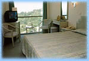
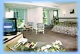
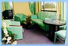
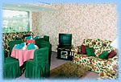
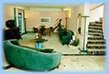

Номера
В Отеле "Рэдиссон САС Лазурная" 299 номеров: 238 – стандартных (104 с двумя раздельными кроватями и 134 с широкой французской кроватью), 21 номер люкс, 15 люкс-апартаментов, 17 номеров люкс и 2 люкс-апaртамента в Ройял клубе отеля. Номера расположены на 18 гостевых этажах.
Стандартный номер
 Однокомнатный номер с двумя раздельными кроватями или одной широкой французской кроватью, площадью 20м2, расположенный с 3-17 этаж. Номер оснащен телефоном, телевизором, мини-баром, платяным шкафом, ванной комнатой.
Люкс
Однокомнатный номер, площадью 40 м2, расположенный на 1,2 этажах отеля, оборудованный большой французской кроватью, телефоном, телевизором, сейфом с кодовым замком, мини-баром, трюмо со стулом, раскладывающимся диваном, двумя креслами, стеклянным рабочим столом, платяным шкафом, дополнительной комнатой для багажа и большой ванной комнатой.
Люкс-апартаменты
Двух комнатный номер с балконом, площадью 40 м2. Включает в себя спальную комнату с французской кроватью, платяным шкафом, телефоном, телевизором,мини-баром и сейфом с кодовым замком; гостиную, обставленную мягкой мебелью (раскладывающийся диван и два кресла), с телефоном, журнальным столиком, небольшим обеденным столом с двумя стульями, а также телевизором с дистанционным управлением (16 спутниковых каналов). Имеется также ванная комната с «джакузи» и дополнительным телефоном, 4 набора различных полотенец. Махровые халаты и тапочки с логотипом отеля сделают пребывание гостей в этом номере еще более удобным и по--домашнему уютным.
Ройял Клуб
Система номеров повышенной комфортности для удовлетворения запросов самых взыскательных клиентов, путем предоставления им удобств и обслуживания более высокого уровня. Отдельная стойка размещения, приветственный коктейль в баре Отеля или гостиной Ройял Клуба, специальный завтрак в номер, гостиную или секцию ресторана, предназначенную для Ройял Клуба, подарок от Отеля в номере, махровый халат и тапочки, бесплатная газета в номер каждое утро.
Виллы
Комфортабельные 2-х-этажные коттеджи, площадью от 75-150м2, расположенные за открытым плавательным бассейном. Всего в отеле 6 вилл: 2-президентские, 3-с двумя спальными комнатами, 1- с одной спальной комнатой.